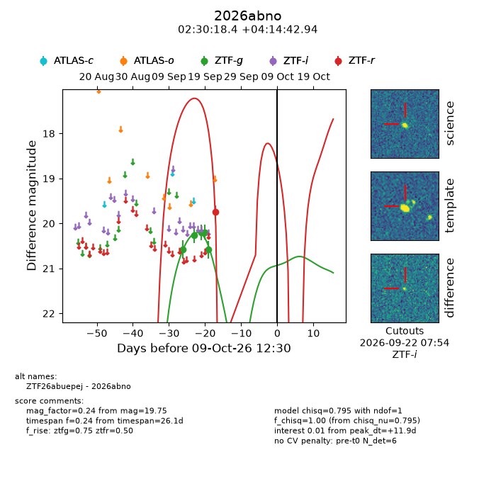
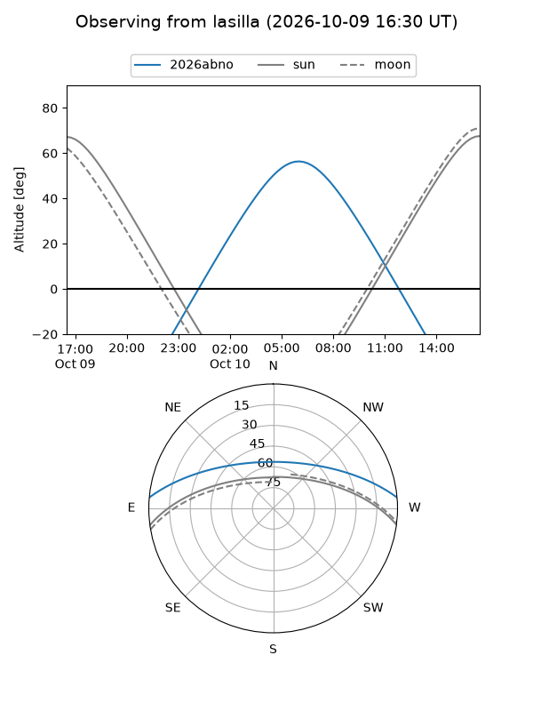
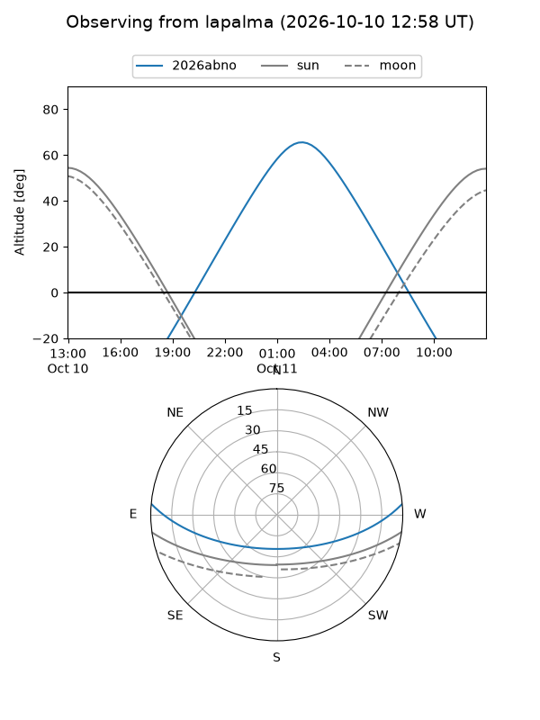
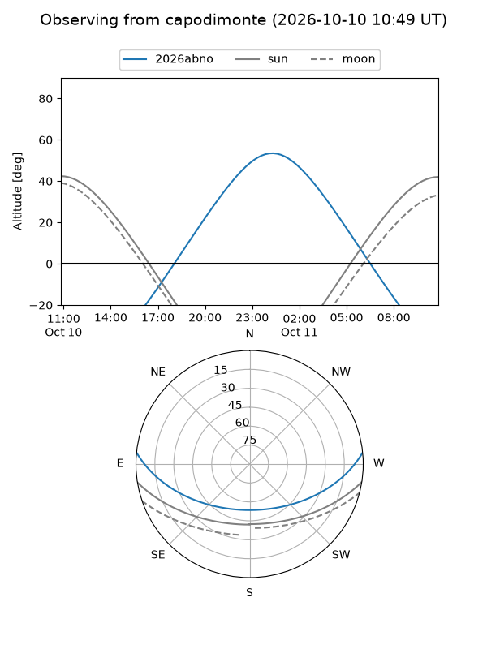
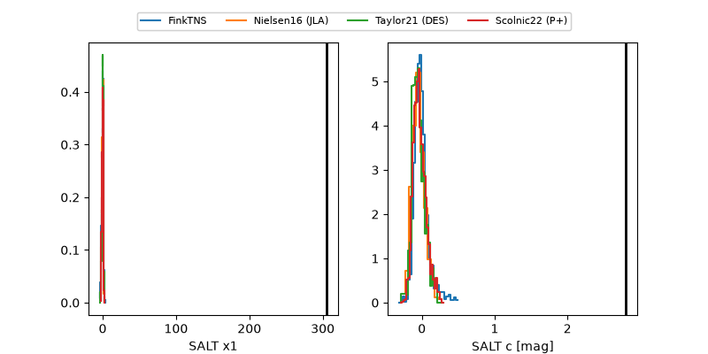

2026abno
Target 2026abno at 2026-10-09 12:32
Aliases and brokers:
FINK-ZTF: ztf.fink-portal.org/ZTF26abuepej
Lasair-ZTF: lasair-ztf.lsst.ac.uk/objects/ZTF26abuepej
ALeRCE-ZTF: alerce.online/object/ZTF26abuepej
YSE-PZ: ziggy.ucolick.org/yse/transient_detail/2026abno
TNS name: wis-tns.org/object/2026abno
Direct TNS query: direct search
alt names
ZTF26abuepej (ztf,fink_ztf)
2026abno (tns,yse)
Coordinates:
equatorial (ra, dec) = 37.5769,+4.24526
equatorial (HMS+DMS) = 02:30:18.44,+04:14:42.94
galactic (l, b) = (163.9760,-50.57674)
Flags:
peak dt: +11.9
Photometry:
last ztfg=20.58, ztfr=19.75
5 ztfg, 1 ztfr detections
Lightcurve

Visibility



Additional plots
